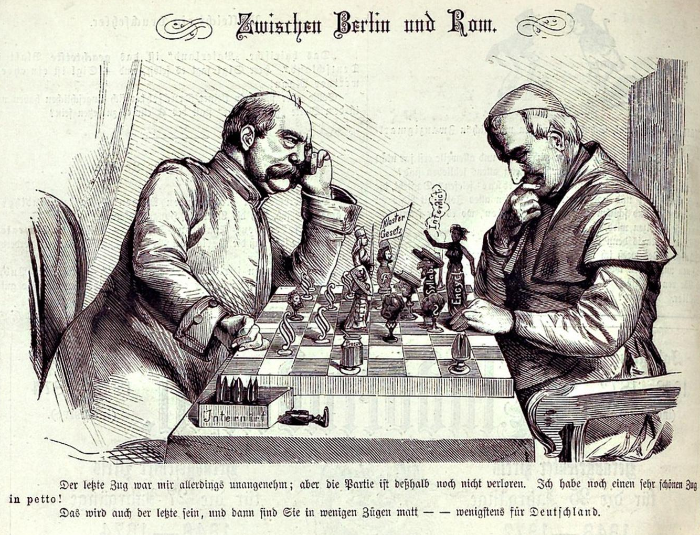

In 1991, James Davison Hunter, a sociologist at the University of Virginia, published a book called Culture Wars: The Struggle to Define America. Hunter argued that American society was undergoing a fundamental moral restructuring. The old divisions in American public life had been primarily religious (Protestant versus Catholic, Christian versus Jewish) and ethnic. The new divisions cut across these older lines in a different way. They were not between different religious communities but between different moral visions inside every religious community, and indeed in every sector of American life.
Hunter identified two broad impulses. The "orthodox" is characterized by commitment to a transcendent, external, and definitive moral authority: God's law, the natural law, the inherited tradition. The "progressive" is characterized by moral authority understood as evolving, internal, and subject to revision in light of new experience and understanding. These two impulses, Hunter argued, were producing a conflict over the definition of American social institutions that had all the features of a cultural war: organized, ideologically coherent, deeply felt, and not easily settled by ordinary political compromise.

Hunter's analysis has been debated and criticized in the three decades since he published it. Some social scientists argue that the actual distribution of opinion on contested moral questions is less polarized than his framework suggests: that most Americans hold moderate views and are divided primarily by elite-level political conflict that has been amplified by media and political organizations. Others argue that Hunter was right about the structure of the conflict but identified the wrong dividing line, that the real divide runs between connected cosmopolitanism and disconnected traditionalism, or between class positions in the new knowledge economy.
But few serious observers of American life have been able to ignore the phenomenon Hunter was describing, and his framework continues to shape debate about American cultural and political conflict. Notice that engaging the objection does not require deciding who wins it. It requires being able to state what evidence would settle it, which is exactly what a sociologist, as opposed to a partisan, is trained to ask.
- Culture Wars
- Hunter's term for organized conflict over the definition of American social institutions, arising from deep disagreement about the source of moral authority. Not primarily a conflict between different religious groups but between different moral visions that cut across religious and ethnic lines.
- Moral Authority
- The source from which a community derives its standards of right and wrong. Hunter distinguishes transcendent moral authority, rooted in a definitive, external source such as God's law, natural law, or inherited tradition, from immanent moral authority, rooted in evolving human understanding and open to revision.
- Symbolic Politics
- Political conflict conducted primarily over the symbolic meaning of an institution, what it belongs to and what it represents, rather than over material arrangements. A fight over a flag, a curriculum, a monument, or a single term is often more heated than a fight over a material outcome, because it is a fight over meaning rather than resources.
Hunter's analysis has real sociological roots. Durkheim argued that the collective conscience is the moral cement of society: the shared values that make genuine social life possible. What happens when the collective conscience divides, not merely over specific policy questions, but over the very source of moral authority, over whose shared values should govern a community's public life? Hunter argues this is precisely what is happening in contemporary America, and the result is not merely political gridlock but a kind of moral disorder that goes deeper than ordinary political disagreement.
From a Weberian perspective, the culture wars can also be understood as a conflict between status groups: communities differentiated not merely by economic position but by lifestyle, cultural taste, educational attainment, and geography. The orthodox and progressive impulses correlate with, though they are not reducible to, different status positions in the knowledge economy, and some sociologists argue the culture wars are as much about status competition as about moral disagreement itself.
| Symbolic politics | Ordinary distributive politics | |
|---|---|---|
| What is contested | What an institution means and whom it speaks for | How a fixed resource gets divided |
| How it is settled | Rarely by a tidy compromise | Usually by negotiation or a formula |
| Intensity vs. stakes | Can be disproportionate to the material cost | Roughly tracks the material cost |
| Example site | A monument's wording | A budget line item |
▶ Name one recurring disagreement you have observed that felt bigger than its material stakes, then check it
A sociological account of moral conflict does not tell you which side is right. It tells you what kind of disagreement you are in, and why some disagreements resist the compromises that settle ordinary politics. That distinction, between a fight over resources and a fight over what an institution means, is a tool you can use on any community you study, including the one you will evaluate for the Community Flourishing Capstone.